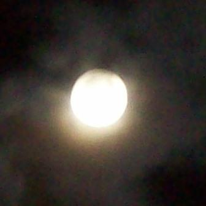
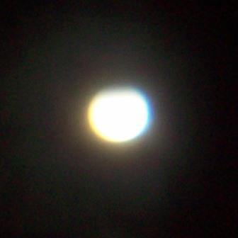
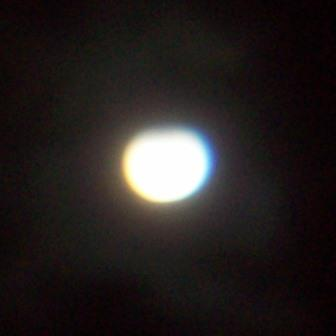
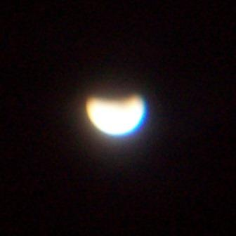
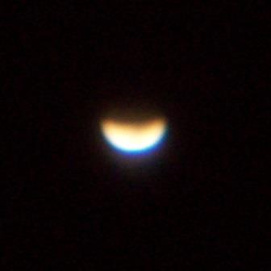
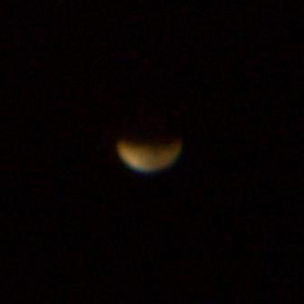
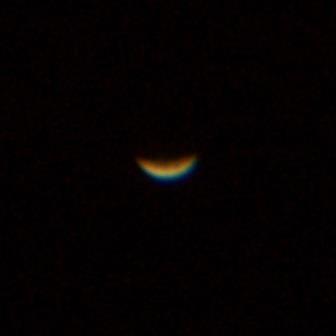
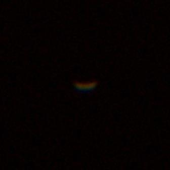
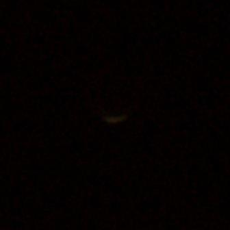
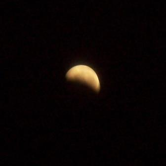

Anabel (Angklung Ansambel Libels) adalah salah satu ekstrakurikuler yang ada di SMAN 15 Surabaya dan berfokus pada alat musik Angklung dan Kolintang. Inilah salah satu aktivitas saya selama akhir minggu, sembari melepas penat dari tugas-tugas selama di SMAN 15 Surabaya ini.
Namun tentu saja tidak sekedar refreshing, saya dan anggota lain juga giat berlatih dan mengikuti berbagai macam lomba, serta mengisi beberapa acara penting (baik yg diadakan sekolah atau pihak lain). Untuk Mengetahui ANABEL lebih lanjut, anda dapat mengunjungi blog kami dengan klik tab "ANABEL" di sebelah pojok atas kiri.
Pada mulanya, pihak sekolah tidak berniat membentuk suatu ekstrakurikuler baru. Tujuan awal diadakannya grup Angklung di SMAN 15 Surabaya ini adalah untuk menyambut tamu dari Australia yang berkunjung saat itu.
Dengan tuntunan dari Bapak Abi Jasid Arif, seorang pelatih Angklung (dan Kolintang) yang cukup terkenal dan sering mengadakan lomba musik etnik. Bapak Arif juga punya andil besar dalam kemunculan Angklung di sekolah ini. Beliau sebagai 'penyambung lidah' dengan supplier Angklung yang ada di Bandung.
Seiring waktu berjalan, semakin banyak siswa yang berminat untuk ikut bermain Angklung.
Akhirnya, ekstrakurikuler Angklung pun terbentuk.
Kami banyak diundang untuk mengisi sebuah acara. Bahkan, kami tak takut untuk mengikuti lomba.
Salah satu prestasi yang telah kami raih adalah Terpilih sebagai Juara 1 Lomba Angklung dalam Festival Musik Etnik Jawa Timur pada tanggal 27 Nopember 2011. [dan dari sinilah sekolah mulai mempercayai kami. Sehingga pada awal tahun 2012, pihak sekolah membeli Kolintang sebagai alat musik tambahan kami].
Salah satu hobi saya adalah mengamati langit malam, Memandangi bintang dan menebak-nebak bintang apakah yang sedang saya amati. Dengan bantuan software Astronomi yang ada di Laptop saya, saya bisa dengan bebas memperkirakan bagaimana kenampakan langit pada malam hari dan objek apa saja yang dapat dilihat.
Terkadang saya pun rela untuk tiduran di atas genteng demi mendapatkan pemandangan langit yang pas dan mematikan lampu balkon agar mendapat cahaya maksimal dari benda-benda langit. Beberapa momen saya abadikan dengan kamera digital saya yang telah dimodifikasi dengan teropong tambahan. Salah satu event yang saya abadikan adalah Gerhana Bulan pada 16 Juni 2011 yang lalu.
         